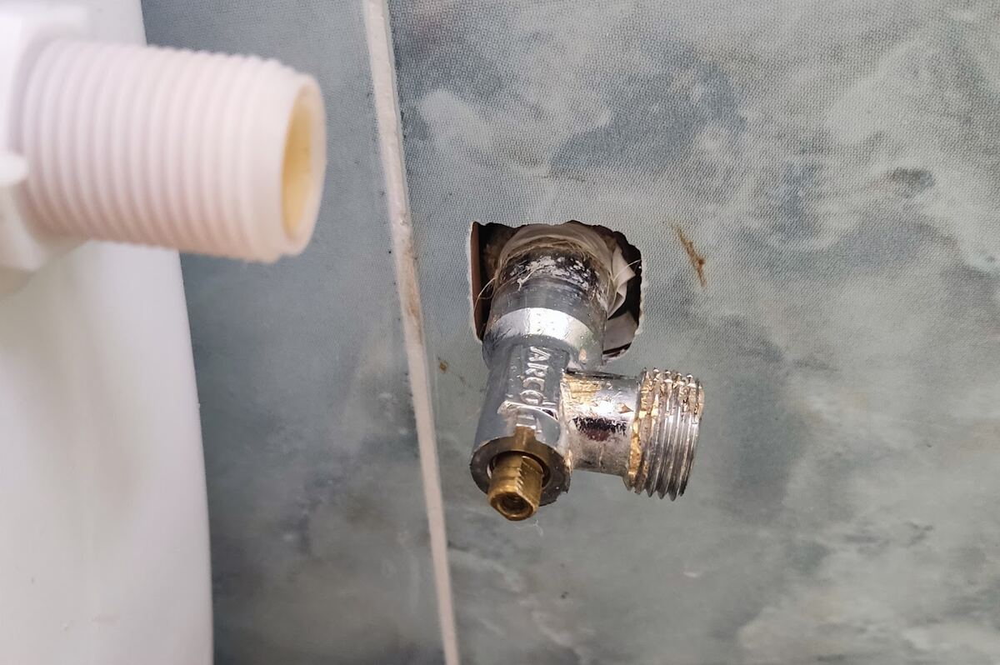

אברי,Avri, מאחורי האריחים.behind the tiles.
אינסטלטור בחיפה והסביבה: נזילות, אסלות, כיורים, קווי ניקוז ולחץ מים.A plumber in Haifa and around: leaks, toilets, sinks, drain lines and water pressure.
רעש של מים זורמים באמת מרגיע, אבל אם זאת נזילה…The sound of running water is truly calming, but if it’s a leak…
לפני, ואחרי.Before, and after.
תמונות מהעבודות של אברי, אריח אחר אריח.Photos from Avri’s own jobs, tile by tile.
לפני
קו ניקוז מתחת לרצפה
מה אברי מתקן.What Avri fixes.
במטבח, בחדרי הרחצה ובצנרת שבקירות.In kitchens, bathrooms and the pipes inside the walls.
אסלות ומיכלי הדחהToilets and cisterns
כיורים וברזיםSinks and taps
קווי ניקוז וביובDrain and sewer lines
לחץ מיםWater pressure
חיפה והסביבהHaifa and around
ספרו לאברי מה קרה.Tell Avri what’s wrong.
בוחרים, וההודעה נכתבת לבד. בוואטסאפ אפשר לצרף תמונה.Choose, and the message writes itself. In WhatsApp you can add a photo.
מה כותבים על אברי.What people write about Avri.
5.0 25 ביקורות בגוגלGoogle reviewsשירות מהיר, מקצועי והכי חשוב – שקוף. אברי הגיע בדיוק בשעה שתיאמנו, עלה מיד על הבעיה, פתר אותה בלי לבזבז זמן, סידר אחריו ובדק שהכל עובד כמו שצריך.
Fast, professional and most importantly – transparent service. Avri came exactly at the time we set, found the problem at once, fixed it without wasting time, tidied up after himself and checked that everything works as it should.
במקום להיות מהנדס – הוא בחר להיות שרברב, והרווח כולו שלנו! מקצוען אמיתי, אדיב, לא פוחד מאתגרים ומביא איתו גישה חיובית ונעימה.
Instead of being an engineer, he chose to be a plumber, and we’re the ones who gain! A real professional, courteous, not afraid of challenges, and he brings a positive, pleasant attitude.
העבודה בוצעה ברמה גבוהה, תוך שמירה על סדר וניקיון. השירות לווה ביחס אדיב ותקשורת נעימה לאורך כל התהליך.
The work was done to a high standard, keeping things orderly and clean. The service came with a courteous attitude and pleasant communication throughout.
למרות שהוא עובד לבד, רמת השירות והאחריות שהוא מפגין שוות יותר מכל צוות שלם. היה נעים לתקשר איתו, הוא הסביר כל דבר בסבלנות…
Even though he works alone, the level of service and responsibility he shows is worth more than any whole team. He was pleasant to talk to and explained everything patiently…
״מה פתאם מכיר מישהו? אני אצלכם בעוד רבע שעה״. וכך היה… שרות מעולה, מקצועי ואדיב, והכל עם חיוך. אין כמו אברי.
“Why would I know someone? I’ll be at your place in a quarter of an hour.” And so it was… Excellent service, professional and courteous, all with a smile. There’s no one like Avri.
שאלות קצרות.Short questions.
באילו אזורים אברי עובד?Which areas does Avri work in?
בחיפה והסביבה. הכתובת בגוגל: מרכז זיו, חיפה.Haifa and around. His Google address: Merkaz Ziv, Haifa.
מה שעות הפעילות?What are the hours?
ראשון עד חמישי 8:00–18:00, שישי 9:00–16:00, שבת סגור.Sunday to Thursday 8:00–18:00, Friday 9:00–16:00, closed on Saturday.
מי מגיע לעבודה?Who comes to do the job?
אברי עצמו. הוא עובד לבד.Avri himself. He works alone.
אפשר לשלוח תמונה של התקלה?Can I send a photo of the problem?
כן, בוואטסאפ למספר 050-831-1400.Yes, on WhatsApp at 050-831-1400.
דברו עם אברי.Talk to Avri.
התקשרו לאבריCall Avri050-831-1400
וואטסאפ לאבריWhatsApp Avriאפשר לצרף תמונהYou can add a photo
מרכז זיו, חיפה · עובד בחיפה והסביבהMerkaz Ziv, Haifa · works in Haifa and around